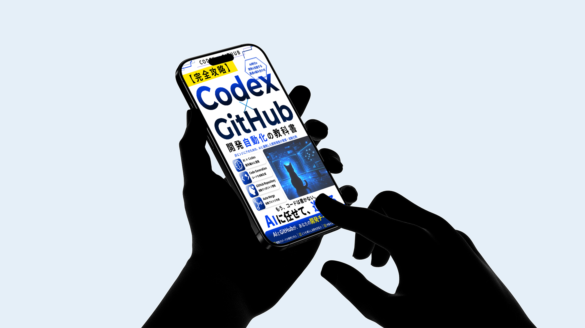
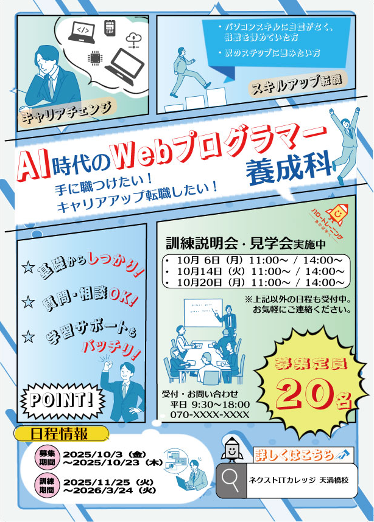
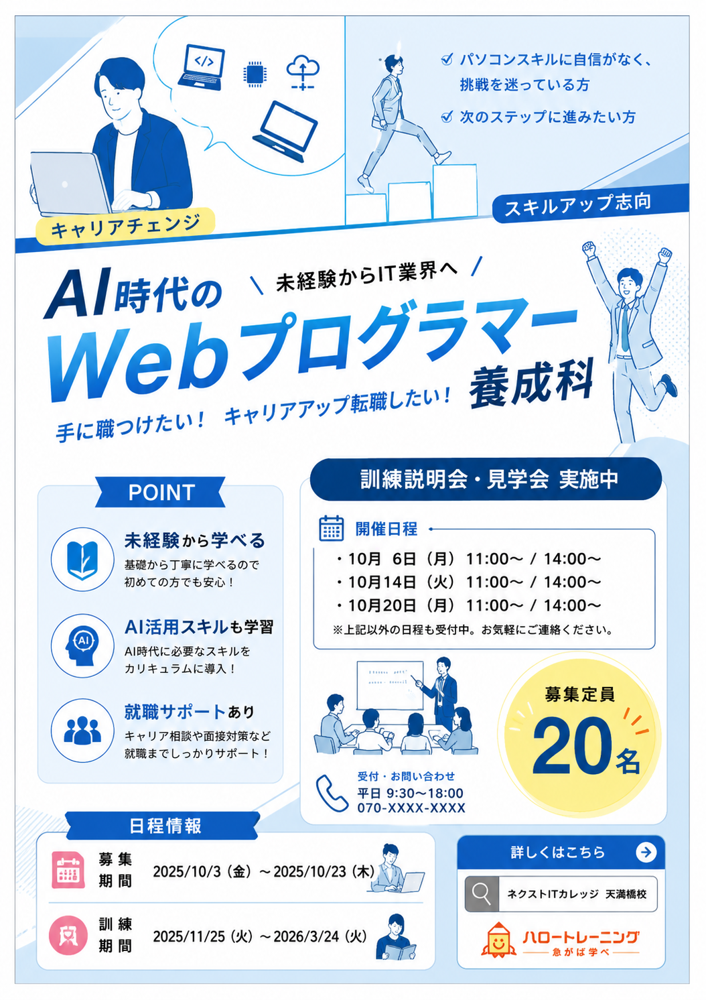
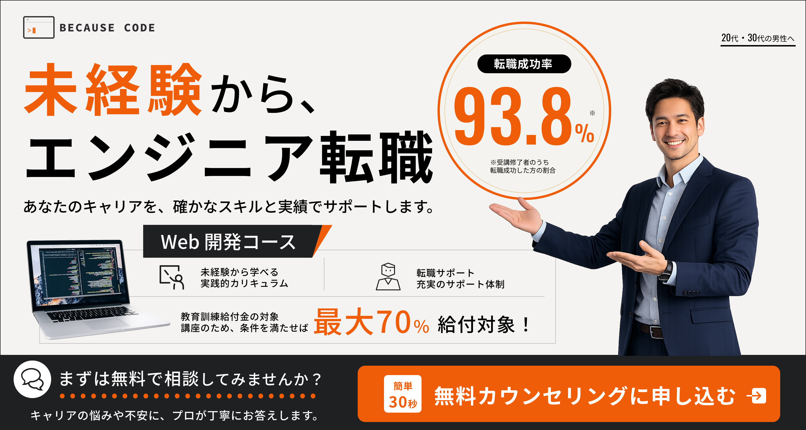

BANNER DESIGN
Banner
Design
SNS広告、キャンペーン、求人広告など、 目的に合わせて制作したバナーデザインを掲載しています。







Design Comparison

Improvement Points
視線誘導の改善
不要な要素を整理し、 「商品写真 → キャッチコピー → CTA」 の順に視線が流れるレイアウトへ改善しました。
配色と世界観の統一
ブラウン・ゴールド・ホワイトを基調とした配色へ整理し、 秋らしい温かみと高級感のある世界観を演出しました。
CTAの強化
ボタンデザインを見直し、 「秋の限定メニューを見る」を視認性の高いCTAとして配置。 ユーザーの行動喚起を強化しました。
What I Learned
この制作を通して、単にデザインを装飾するだけでなく、 情報の優先順位を整理することの重要性を学びました。 また、配色や余白、CTAの見せ方によって、 ユーザーの視線や行動が大きく変化することを実感しました。





Banner Variation
Design Points
ブランドイメージの統一
Webサイトと同じ黒・木目・ゴールドを使用し、プライベートサウナらしい高級感を演出しました。
目的別の情報設計
ブランド訴求では空間の魅力を、キャンペーン訴求では価格や割引率を目立たせ、 広告の目的に合わせてレイアウトを変えました。
視認性の向上
背景写真の上に黒のグラデーションを重ね、文字が読みやすくなるよう調整しました。
What I Learned
同じブランドでも、認知目的と販促目的では見せる情報の優先順位が変わることを学びました。 デザインの世界観を保ちながら、広告として伝えるべき要素を整理する重要性を実感しました。
About Banner Design
Design for Communication
情報を分かりやすく伝えることを意識しながら、 配色や文字組み、視線誘導を考慮したバナー制作を行っています。